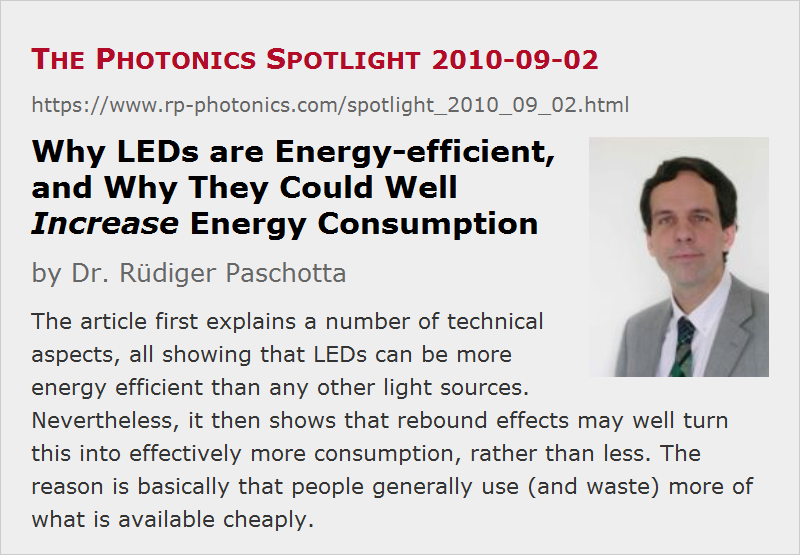

Why LEDs are Energy-efficient, and Why They Could Well Increase Energy Consumption
Posted on 2010-09-02 (revised on 2010-09-03) as a part of the Photonics Spotlight (available as e-mail newsletter!)
Permanent link: https://www.rp-photonics.com/spotlight_2010_09_02.html
Author: Dr. Rüdiger Paschotta, RP Photonics Consulting GmbH
Abstract: The article first explains a number of technical aspects, all showing that LEDs can be more energy efficient than any other light sources. Nevertheless, it then shows that rebound effects may well turn this into effectively more consumption, rather than less. The reason is basically that people generally use (and waste) more of what is available cheaply.
Ref.: encyclopedia articles on light-emitting diodes and fluorescent lamps; for German-speaking readers: articles on Beleuchtung, Leuchtdiode, Leuchtstofflampe and Rebound-Effekt

Light-emitting diodes (LEDs) are very efficient means for generating light from electricity. It is common to compare them with ordinary bulbs (incandescent lamps), which reach a luminous efficacy somewhat around 15 lm/W, except for the even less efficient low-power bulbs; halogen lamps get somewhat higher, e.g. around 20 lm/W. White-emitting LED packages easily exceed 50 lm/W today, and this is far from the theoretical limit, which is of the order of 400 lm/W. In a few years, it should be quite common to achieve something like 200 lm/W, leaving any bulbs far behind. Even fluorescent lamps, including compact fluorescent lamps (CFLs, “energy-saving lamps”), cannot compete here, often delivering below 100 lm/W and not getting much higher.
Directional Emission
There is even a bigger efficiency advantage for LEDs than apparent from the above considerations. The light emission is somewhat directional, not omnidirectional as for fluorescent tubes and bulbs. This makes it much easier to get the light to the place where it is needed. If you try to get a well directed cone of light from a bulb or even a fluorescent tube, you can get this only at the price of losing much of the light, whereas LEDs can do this quite well (although not without limits, of course – lasers are far better in this discipline.) That factor is difficult to quantify, but definitely relevant.
Generation of Colored Light
Another issue arises in cases where we need colored light rather than white light. If one requires red light for traffic lights, for example, it is extremely inefficient to do this by generating white light with a bulb (losing around 95% of the energy) and then to filter out all the unwanted spectral components (green, blue, etc.), spoiling even more of the energy. In contrast, an LED will generate just one light color (with a certain optical bandwidth, of course) and requires no filtering, so that all the generated light can be used.
Switching without Lifetime Problems
A further advantage of LEDs is that they can be switched on and off very often without compromising their lifetime. Therefore, it is possible to operate them only where needed and save energy even during short periods of time where they can be switched off. The question is, though, whether users will do that, given that they consider it useless to save on some already small consumption. (That already alludes to the rebound problem, see below.)
Gray Energy
In terms of “gray energy”, i.e., energy needed to produce the lamps, the comparison depends very much on the circumstances. Generally, one can assume that very compact lamp constructions, as are made possible by LEDs, will need small amounts of materials and therefore tentatively less gray energy. However, generally the energy spent during operation of lamps is dominating, so gray energy is not the big factor here.
And How Could LEDs Possibly Increase Energy Consumption???
Certainly, all aspects discussed above absolutely suggest that the more and more widespread use of LEDs will cut down substantially on electricity consumption, as LEDs generally need less for the same amount of light. Once again: they need less for the same amount of light. The trouble is, however, that people tend to use more of what is available cheaply. Well, LED lamps are certainly not cheap to buy yet, only cheap to operate. But who will care to turn off LED lights, being so happy that they consume nearly nothing to generate light? So we have to expect that so-called rebound effects will not only eat up all efficiency advances, but even turn them into additional consumption. And this is not just pessimistic fantasy – it is rather exactly what happened in the past. For example, street lighting has become much more efficient than it was decades ago, but nevertheless we need much more electricity nowadays to illuminate one mile of a road than we used to.
Presumably, light from LEDs will be wasted even more than light generated with less efficient sources. And people can always both use and waste more light. This applies both to people in industrialized countries and in developing countries. The latter may have too little light now, and cheaper LEDs will enable them to use much more – which is nice, but will increase the energy consumption. One may think that at least in industrialized countries there will be some kind of saturation: at some level, you have enough light and don't want more. However, consider that even fully illuminated rooms are at a level of illumination which is very low compared with full sunlight or even daylight on a not very bright day. You should trust that some manufacturers will do their best to convince people that too dark rooms are bad for you (for some reason yet to be invented), so that you should try to get as much light into your rooms in the evening as you have during the day. This is nonsense, of course, but some people will try, and some others will believe them, so that they will flood their rooms with more light than ever before, and LEDs will allow them to do that.
Who cares, will be said by some, but I tell you who should care: all those who have realized that we have finite material and environmental resources on this earth, which are much too sparse for any foreseeable future to waste anything before many others get out of poverty. If you share this insight and attitude with me, you know now that more efficient lamps, based on LEDs, for example, can absolutely not be the only solution for electricity consumption in lighting. If we use them with intelligence and care, they can definitely be an important part of the solution. If we don't, they could make the problem even worse.
This article is a posting of the Photonics Spotlight, authored by Dr. Rüdiger Paschotta. You may link to this page and cite it, because its location is permanent. See also the RP Photonics Encyclopedia.
Note that you can also receive the articles in the form of a newsletter or with an RSS feed.
Questions and Comments from Users
Here you can submit questions and comments. As far as they get accepted by the author, they will appear above this paragraph together with the author’s answer. The author will decide on acceptance based on certain criteria. Essentially, the issue must be of sufficiently broad interest.
Please do not enter personal data here; we would otherwise delete it soon. (See also our privacy declaration.) If you wish to receive personal feedback or consultancy from the author, please contact him e.g. via e-mail.
By submitting the information, you give your consent to the potential publication of your inputs on our website according to our rules. (If you later retract your consent, we will delete those inputs.) As your inputs are first reviewed by the author, they may be published with some delay.
|  |
If you like this page, please share the link with your friends and colleagues, e.g. via social media:
These sharing buttons are implemented in a privacy-friendly way!